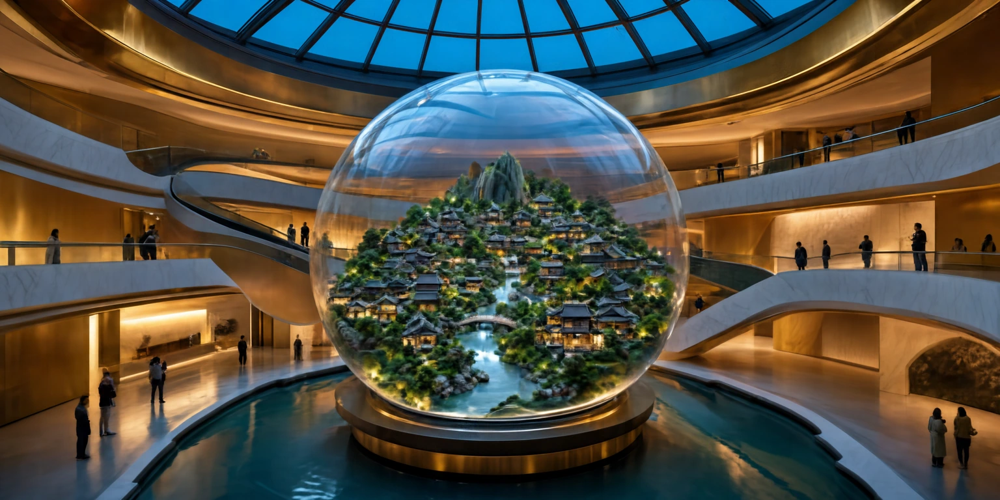
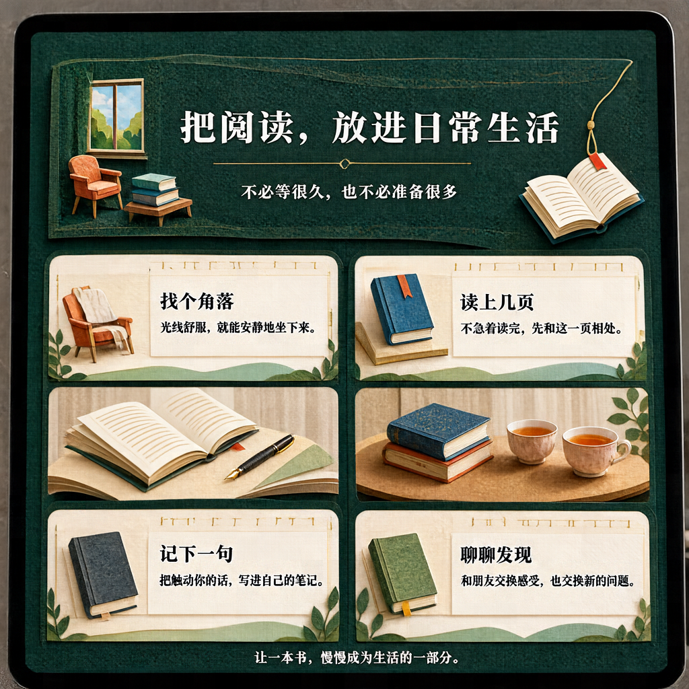
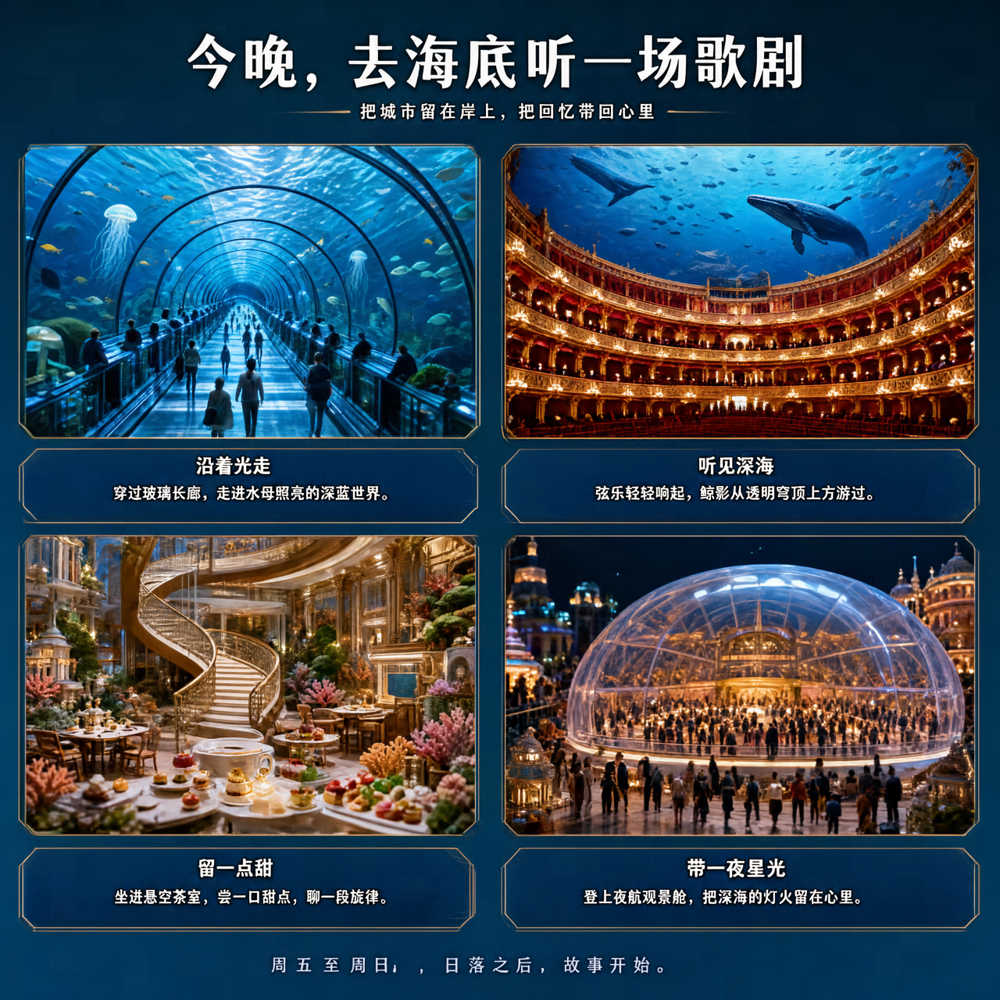
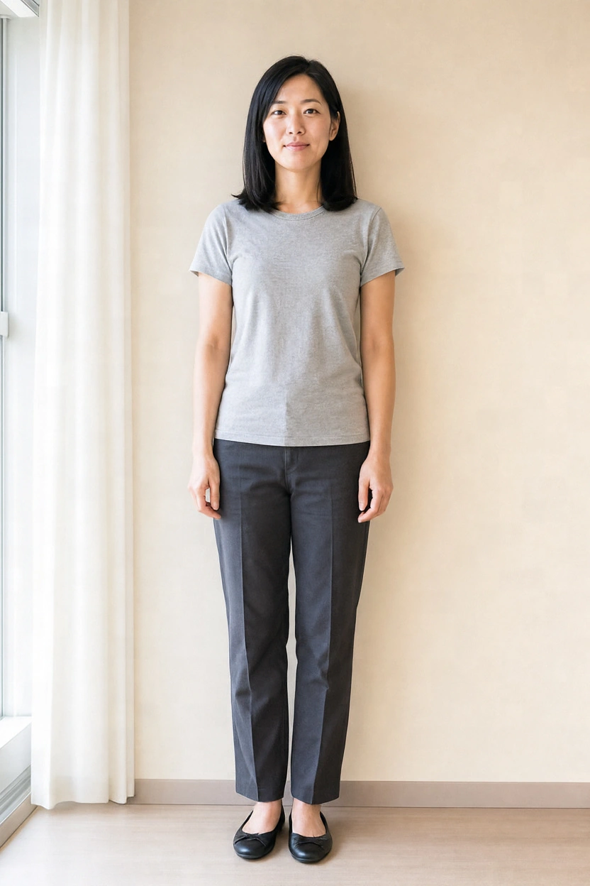
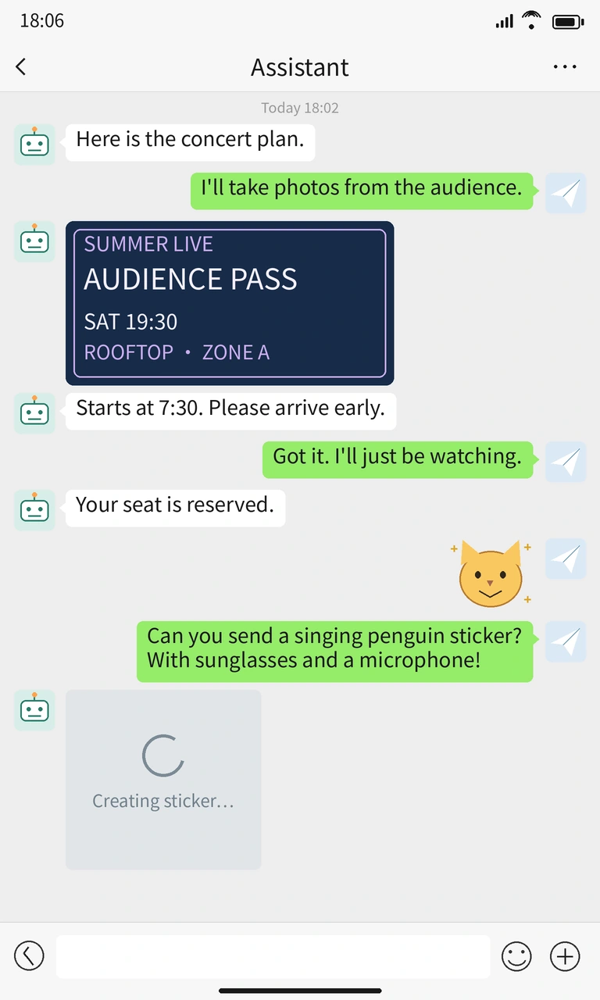
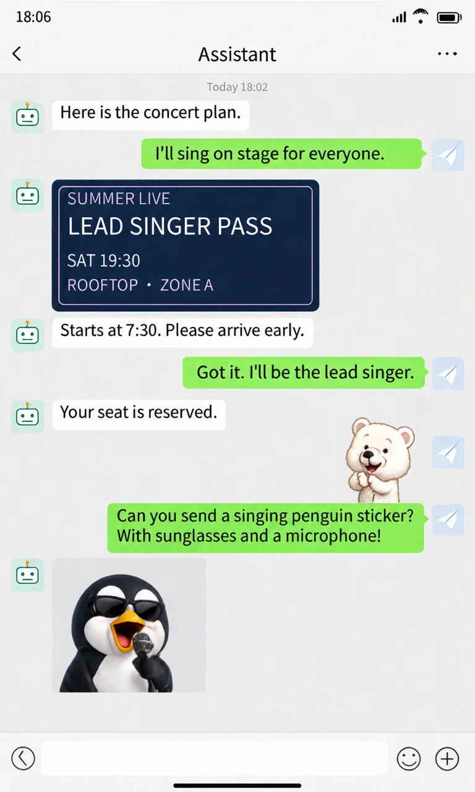
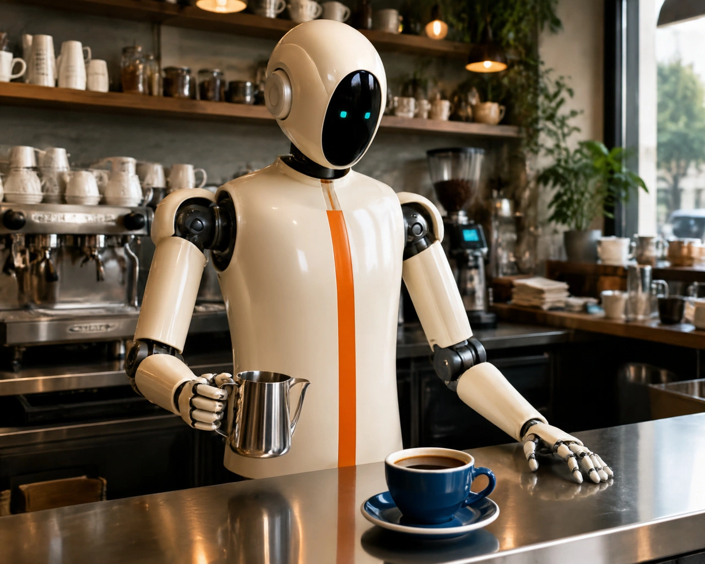
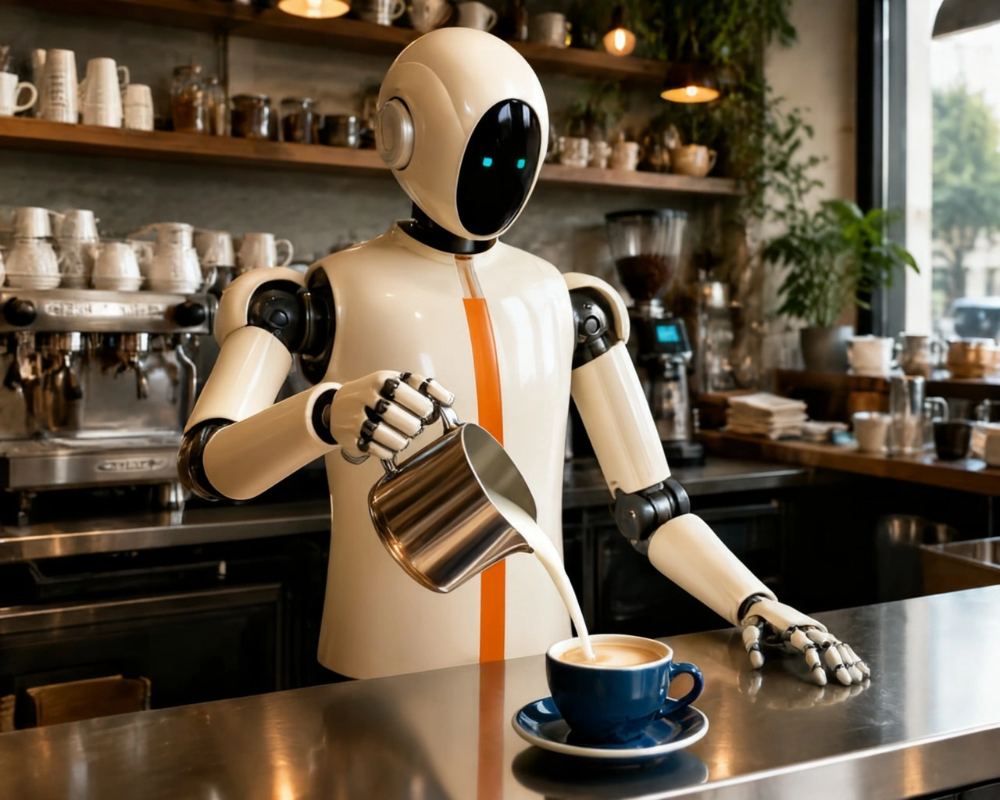
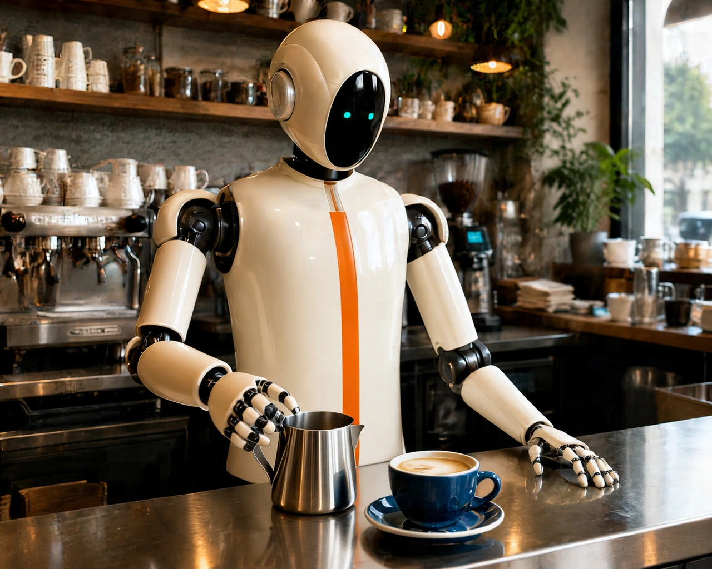
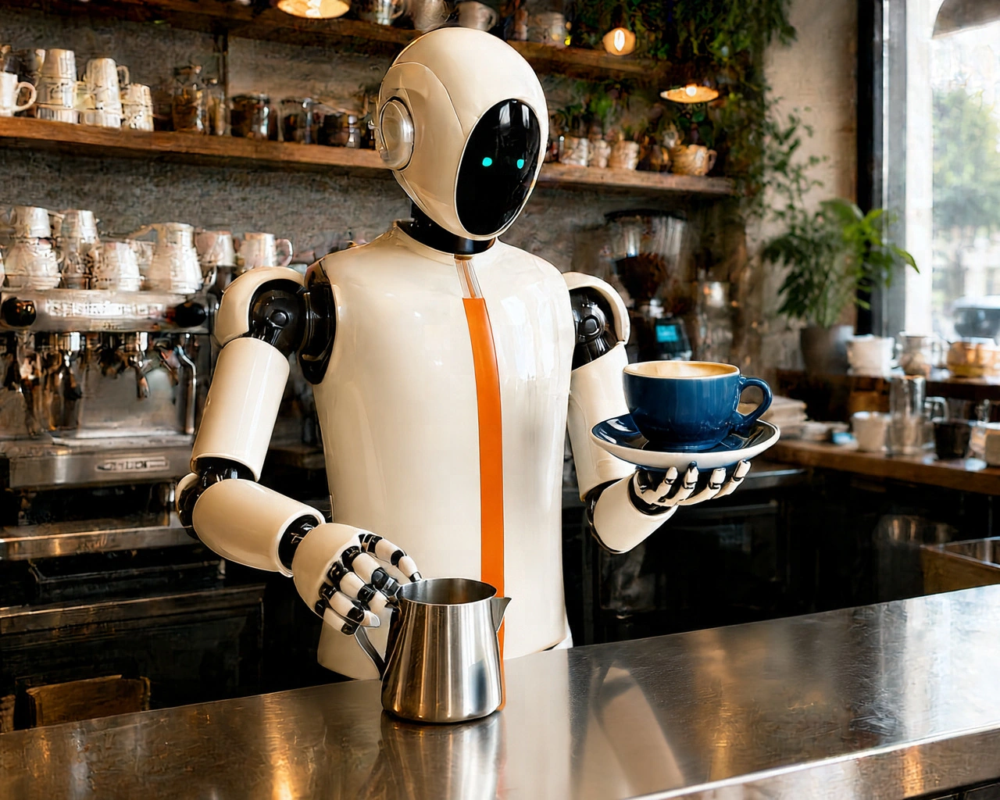

Native Pixel-Space
Multimodal Creation
From an idea to an entire world.
WeGen2
Creation, then the model behind it
One model. Many ways to create.
Bring an idea.
See where it goes.
Start with words. Add references. Keep creating in context. WeGen2 brings generation, editing, and visual composition into one native pixel-space model.
- 61B
- Total parameters
- 7B
- Activated per generation token
- 11
- Generation & editing benchmarks
- Native
pixels - Directly between RGB and the backbone
The film
A closer look
at what comes next.
From imagined worlds to reference-guided creation, then inside the architecture that brings them together.
Model-generated images, presented through editorial motion design. Original instrumental score.
01 / Create
A wider
visual vocabulary.
Photographic light, intricate illustrations, tactile materials. Different visual languages, one model.
Words belong in the picture.
More to see.
More to read.
Illustration and explanatory text share the same canvas. An underwater opera poster combines four richly detailed scenes with Chinese headlines and descriptive passages.
Generated from one text prompt. The scenes, layout, and lettering are all part of the model output.

And another voice:
a text-to-image reading guide.

02 / Compose
Many references.
One new look.
Select a reference to trace its visible counterpart. Individual garments and accessories guide the resulting outfit.

Select a reference to explore the outfit.
03 / Edit
Keep the idea.
Change its world.
A reference image guides the next creation.
04 / Continue
There is always
a next idea.
Add a reply, then revise the conversation. Earlier images become context for successive edits.


Visual storytelling
A whole story.
One canvas.
A fox and a little robot make a cake. Eight richly illustrated panels, brought together as one complete comic page.
Explore another sequence




Five successive image states in a robot café scene. An image-editing demonstration.
Inside WeGen2
Native pixels.
Connected thinking.
Distinct roles for understanding and generation. A shared visual conversation, from context to the next image.
Directly in image space.
Learned patch modules connect RGB images and the backbone. No separate pretrained vision encoder or latent autoencoder is used at inference.
A foundation for further research.
61B total · 7B activated per generation token · No reinforcement learning or distillationMeasured across tasks
Top-tier results.
A broader picture.
The report evaluates WeGen2 across 11 generation, editing, and composition benchmarks.
Each benchmark uses its own metric. See the report for individual scores, comparison settings, and prompt-enhancement reporting.

Start creating
A simple interface.
An open-ended idea.
from wegen2 import WeGen2Pipeline
pipe = WeGen2Pipeline.from_pretrained(
"./weights/WeGen2", devices="cuda:0,cuda:1"
)
session = pipe.session()
image = session.generate(
"An intricate paper mountain city, a red train."
)
image.save("paper-world.png")
next_image = session.generate(
"Change the scene to night. Light the windows."
)
next_image.save("paper-world-night.png")Words. Images. Context.
A prompt starts a generation. Images provide references. A session retains context for the next edit.
- Checkpoint
- 61B parameters · BF16
- H20 planning estimate
- 2 × NVIDIA H20 · 96 GB each
- Estimated weight memory
- 57.9 / 56.6 GiB across two H20 GPUs
Weights only; runtime memory is additional. Checkpoint-based estimates, not H20 measurements. H20 latency has not been measured.
Read the inference guide ↗Code in private preview. Weights and final licensing forthcoming.